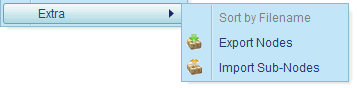
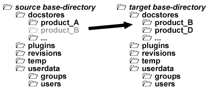

1.13.14. Export, import and migration
Exporting and importing nodes
To move nodes from one product to another product, export the nodes from the source product to a zip-file and then import the zip-file in the target product. The export and import is possible for all types of product-tree nodes, i.e. for content-, section-, image-, file- and reference-nodes. To export nodes to a zip-file, select the nodes and open the context-menu. Choose the menu item Extra > Export Nodes to save the selected nodes into a zip archive.

Figure 1.13.93. Menu items for exporting and importing nodes
To import the nodes in the target product, select the node to which the exported nodes shall be added as sub-nodes, and choose the context menu item Extra > Import Sub-Nodes. In the file-chooser dialog select the previously exported zip-file.
Important!
If the alias name of a node to be imported is already used by another node in the target product, then a sequence number is added to the alias name of the node to be imported.
Migrating the complete product documentation
To move a complete product documentation from one Docmenta installation to another installation, simply move the complete product directory (see Chapter 1.2, Creating a new product) to the new location. For example, compress the product directory into a zip file, move it to the target server and unpack the zip file at the desired location.

Figure 1.13.94. Migrating the product documentation
If you have moved the product directory to the default location <base-directory>/docstores, where <base-directory> is the document-store directory that is configured for the target installation, then the product will automatically be listed as new product in the the target installation. You can also place the product directory outside of the document-store directory. In this case you explicitely have to add the product to the target installation as it is described in chapter Section 2.7.1.3, “Adding a product”.
Note that the product directory does not include application settings, i.e. the character entity configuration, the user and user-group configuration, the registration of Auto-Format classes and other global application settings. However, you can move these settings separately as described below.
Migrating user data
To migrate the complete user and user-group settings, move the folder <Base-Directory>/userdata of the source installation to the corresponding location of the target installation (i.e. replace the existing userdata folder of the target installation by the userdata folder of the source installation).
To migrate single users from one installation to another installation, copy the corresponding property file in the <Base-Directory>/userdata/users folder to the users folder in the target installation. Note that you may have to update the group relation of the user, as the target installation may contain different groups than the source installation.
To migrate single groups from one installation to another installation, copy the corresponding property file in the <Base-Directory>/userdata/groups folder to the groups folder in the target installation.
Migrating global application settings
To migrate global application settings, replace the corresponding property in the file <Base-Directory>/application.properties of the target installation by the corresponding property of the source installation. For example, to migrate the character entity configuration, replace the line that starts with "char.entities=" in the application.properties file of the target installation by the corresponding line in the application.properties file of the source installation. If a line starting with "char.entities=" does not exist, then just add the line at the end of the applications.properties file.
Converting the storage type
Up to Docmenta version 1.5 the only supported storage type was filesystem storage. Filesystem storage means, that every content node is stored as a single file in the product-directory. In Docmenta version 1.6 database storage has been added. See Section 2.7.1.1, “Storage types” for details on the different storage types.
To convert a product from one storage type to another (e.g. from filesystem-storage to database storage), the product needs to be copied as described in Section 2.7.1.6, “Copying a product”. Select the desired storage type in the destination product. After the copy operation has been completed, the source product can be deleted and the ID of destination product can be changed to the ID of the deleted product.
Switching the original language
There might be rare cases where you want to switch the original language. For example, let's assume you have started to write the product language in your native language, e.g. Spanish, and you have started to translate the content into English. Later on, you might want to continue the product documentation in English and let translators do the translation into other languages. In this case you need to switch the original language of your existing documentation from Spanish to English, keeping Spanish as a translation language.
To switch the original language, the product needs to be copied as described in Section 2.7.1.6, “Copying a product”. Note that the destination product needs to be created with the desired original language. In the example given above, the original language of the destination product would have to be English. After the copy operation has been completed, the source product could be deleted and the ID of destination product could be changed to the ID of the deleted product. This way you would have created a product with same product ID but with switched original language.